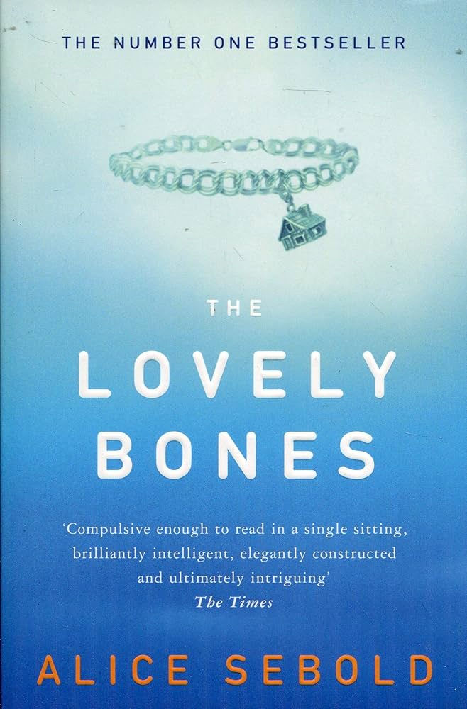

Lovely Bones

The lovely bones is a drama book turned into a movie that is full of heartbreak for every character. I rate this movie a good 9/10 and the book a 10/10. Movies that originate from books, most of the time leave out a lot of details. Either way the movie was perfectly executed and although it left out some details from the book it never left out the big details that are important to the story. The lovely bones is about a perfectly happy family set in the 70's.
The story takes a dark and sad turn as the oldest daughter, Susie Salmon was murdered at just 14 years old. The book and movie follows up on the family´s grief process as they try to figure out who is responsible for her death. Although Susie has passed away the story still goes through her point of view. After her passing the story follows her around as she tries to grieve her own death and the fact that she can do nothing but watch as her family is falling apart and her murderer continues to strike. I rate the book a 10/10 as it goes through every single one of the characters that was close to her and how they were affected by her death.
As each chapter was meant for a character and switches to their point of view, it made the story 100 times sadder. The book goes in depth of how her family struggles to cope with her loss and shows how each member griefs differently. We see how her family starts to fall apart as her parents separate due to Susie's mom just wanting to accept that they might never find the person guilty of taking her daughter from her despite Susie's dad fighting to get justice and being overcome by grief that people think he has gone crazy for accusing the neighbor of being the one responsible of their daughters death. Compared to the movie, in the book we get way more details over her death and it lets us go into the minds of other characters besides her family such as her friends and more.
The ending to both the movie and the book is just heartbreaking. I have watched the movie before reading the book hoping that the ending would have been happier than the movie. You should definitely read this book and watch the movie as it is the perfect watch and read to get you in your feels. If you like this book you should definitely read We Were Liars as it has the same themes of mystery, romance, and drama.
Filed under Book to Film, Drama